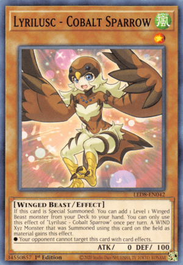
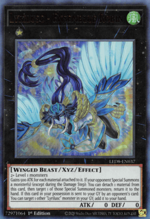
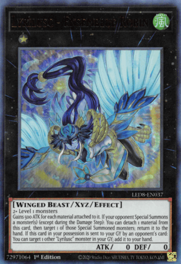

Hand


Since we control no monsters,
Turquoise can special summon itself from our hand as well as 1 level 1 Lyrilusc from our hand.
We special summon Cobalt with this effect, and being special summoned activates Cobalt's effect,
letting us get 1 level 1 Winged Beast from our deck to our hand, and we pick Sapphire.
We overlay the two we summoned under our Xyz Lyrilusc Card, Recital and activate it's effect.
At the cost of detaching one overlay unit from Recital, we detach our Turquoise to the grave,
the effect allows us to add 1 level 1 Winged Beast from our deck to our hand, and we pick Celestine.
Field

+ Overlays
Hand


Since we have Recital on the field,
a Winged Beast monster, Sapphire's effect can summon itself and 1 level 1 monster from the hand.
So we special summon both Sapphire and Celestine. This in turn activates Celestine's effect,
allowing us to add one Lyrilusc spell or trap from our deck to our hand, we select Bird Sanctuary.
Field
+ Overlays
Field
Hand

With our newly summoned 2 monsters,
we overlay another Lyrilusc Xyz monster, our boss monster Assembled. When Sapphire is used to Xyz a Lyrilusc monster,
we are allowed to equip one Lyrilusc monster from our grave to it, as material. The Turquoise we sent to the grave earlier
comes in play again thanks to this effect, and we obtain a 3 material Assembled on the field.
Then we activate Bird Sanctuary from our hand, since we have an Xyz monster with 3 mats,
we can use it's effect to draw one card.
Field
+ Overlays
Field
Hand +1
Next we use our Assembled's effect
by detaching Celestine to the grave, who can be equipped to a Lyrilusc Xyz on the field, from the grave, once per turn. The effect grants all Lyrilusc monsters destruction prevention,
as well as preventing any damage to the user for the remainder of the turn. At this point we have a choice, we can either end our turn after re-attaching Celeste, or we can activate
the second effect of Bird Sanctuary. If we choose to do so, we can attach our Xyz card Recital, along it's materials(only Cobalt in this case) to our Assembled as overlay units.
Giving our boss monster a total of 5 overlay units at the end of our turn.
Field
Hand +1
Lyrilusc - Beryl Canary:
If this card is in your hand: You can target 1 "Lyrilusc" monster in your GY; Special Summon both this card and that monster,
also you cannot Special Summon monsters from the Extra Deck for the rest of this turn, except Xyz Monsters.
You can only use this effect of "Lyrilusc - Beryl Canary" once per turn. A WIND Xyz Monster
that was Summoned using this card on the field as material gains this effect.
● This card gains 200 ATK, also its control cannot switch.
Lyrilusc - Celestine Wagtail:
If this card is Special Summoned: You can add 1 "Lyrilusc" Spell/Trap from your Deck to your hand.
If this card is in your GY: You can target 1 "Lyrilusc" Xyz Monster you control; attach this card to it as material.
You can only use each effect of "Lyrilusc - Celestine Wagtail" once per turn.
Lyrilusc - Cobalt Sparrow:
If this card is Special Summoned: You can add 1 Level 1 Winged Beast monster from your Deck to your hand.
You can only use this effect of "Lyrilusc - Cobalt Sparrow" once per turn. A WIND Xyz Monster
that was Summoned using this card on the field as material gains this effect.
● Your opponent cannot target this card with card effects.
Lyrilusc - Sapphire Swallow:
If you control a Winged Beast monster: You can Special Summon both this card and 1 Level 1 Winged Beast monster from your hand.
You can only use this effect of "Lyrilusc - Sapphire Swallow" once per turn. A WIND Xyz Monster
that was Summoned using this card on the field as material gains this effect.
● If it is Xyz Summoned: You can target 1 "Lyrilusc" monster in your GY; attach it to this card as material.
Lyrilusc - Turquoise Warbler:
If you control no monsters, you can Special Summon this card (from your hand). If this card is Special Summoned from the hand:
You can Special Summon 1 "Lyrilusc" monster from your hand or GY.
You can only use this effect of "Lyrilusc - Turquoise Warbler" once per turn.
Lyrilusc - Recital Starling:
2+ Level 1 monsters
If this card is Xyz Summoned: You can target 1 face-up monster on the field; it gains 300 ATK/DEF for each material attached to this card.
Once per turn: You can detach 1 material from this card; add 1 Level 1 Winged Beast monster from your Deck to your hand.
All battle damage you take from battles involving this Xyz Summoned card is also inflicted to your opponent.
Lyrilusc - Assembled Nightingale:
2+ Level 1 monsters
Gains 200 ATK for each material attached to it. This card can attack directly. While this card has material,
it can attack a number of times each Battle Phase, up to the number of materials attached to it.
Once per turn (Quick Effect): You can detach 1 material from this card; until the end of this turn,
"Lyrilusc" monsters you control cannot be destroyed by battle or card effects, also you take no battle damage.
Lyrilusc - Independent Nightingale:
"Lyrilusc - Assembled Nightingale" + 1 "Lyrilusc" monster
If this card is Fusion Summoned using an Xyz Monster on the field as Fusion Material whose original name includes "Lyrilusc":
You can increase this card's Level by the number of Xyz Materials that monster(s) had. This card gains ATK equal to its Level x 500.
Unaffected by other cards' effects. Once per turn: You can inflict damage to your opponent equal to this card's Level x 500.
Lyrilusc - Ensemblue Robin:
2+ Level 1 monsters
Gains 500 ATK for each material attached to it. If your opponent Special Summons a monster(s) (except during the Damage Step):
You can detach 1 material from this card, then target 1 of those Special Summoned monsters; return it to the hand.
If this card in your possession is sent to your GY by an opponent's card: You can target 1 other "Lyrilusc" monster in your GY;
add it to your hand.
Lyrilusc - Promenade Thrush:
2+ Level 1 monsters
Gains 500 ATK for each material attached to it. Once per turn: You can detach 1 material from this card,
then target 1 Spell/Trap your opponent controls; shuffle it into the Deck. At the start of the Damage Step,
if another monster you control battles: You can detach any number of materials from this card;
that monster you control gains 300 ATK for each material detached, until the end of this turn.
Lyrilusc - Bird Sanctuary:
You can target 2 Winged Beast Xyz Monsters you control; attach 1 of those monsters to the other as material.
(Transfer its materials to that monster.) If you control an Xyz Monster with 3 or more materials: You can draw 1 card.
You can only use each effect of "Lyrilusc - Bird Sanctuary" once per turn.
Lyrilusc - Bird Strike:
If you control a "Lyrilusc" monster: Negate the effects of all face-up monsters your opponent currently controls,
until the end of this turn. You can only activate 1 "Lyrilusc - Bird Strike" per turn.
Lyrilusc - Bird Call:
Take 1 "Lyrilusc" monster from your Deck, and either add it to your hand or send it to the GY,
then you can Special Summon 1 "Lyrilusc" monster with a different name from your hand.
You can only activate 1 "Lyrilusc - Bird Call" per turn.
Lyrilusc - Phantom Feathers:
Target 1 "Lyrilusc" monster you control; the ATK of all monsters your opponent currently controls become that monster's current ATK,
also their Levels/Ranks become 1. When an opponent's monster declares an attack on your "Lyrilusc" monster:
You can banish this card from your GY; your monster's ATK becomes that opponent's monster's ATK, until the end of this turn.
You can only use each effect of "Lyrilusc - Phantom Feathers" once per turn.


 
